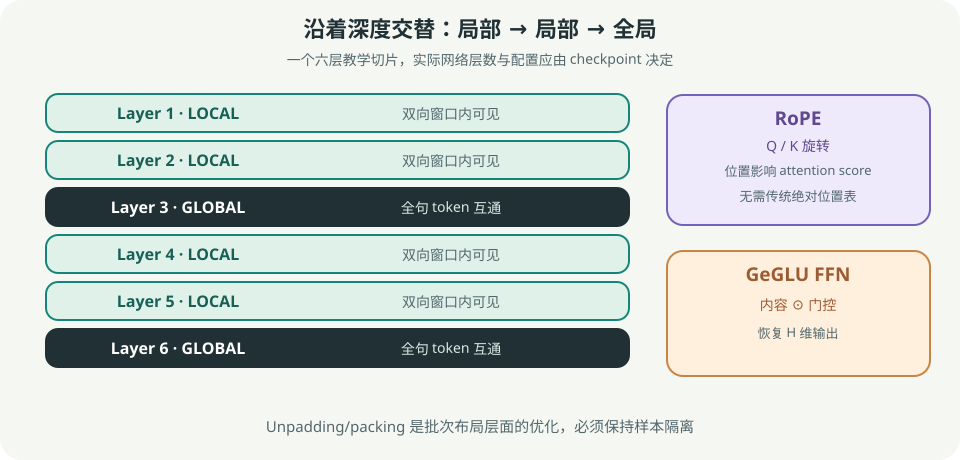

1. 为什么重新设计 Encoder，而不是简单再训练一个 BERT
经典 BERT 的绝对位置嵌入、标准 GELU FFN、全部密集注意力与固定长度输入，在现代硬件/训练流水线中未必是最优组合。对于高吞吐分类、embedding、RAG 重排及长文本抽取，Tokenizer 的开销、短句 padding 和 T² attention 都可能成为瓶颈。ModernBERT 从工程协同的角度系统更新双向 Encoder。
它不是一个在旧 BERT-base checkpoint 上启用的“兼容选项”：位置编码、FFN 结构、参数化、tokenizer 与预训练 recipe 都可以不同。因此不能把 BERT 权重直接加载到 ModernBERT 模型架构里，期望它表现为同一个网络。
2. 交替全局与局部：为什么不是每层都必须全连接
ModernBERT 使用局部 attention 与全局 attention 交替的模式。官方发布材料说明其参考配置一般每 3 层有一个全局 attention 层，其它层在约 128 token 的局部窗口内建立注意力联系。局部层让同一段里的细粒度交互更便宜；全局层让远处 token 可以在相应层直接通信，避免所有层都需要构建全长 token-pair score。
这里的“global layer”意味着该层中普通 token 对整个有效序列都可访问，而 Longformer 的“global token”意味着指定少数位置拥有全局连接。两者同有 global 一词，却不是同一种稀疏化规则；混写会造成 attention mask 错误。
需要强调的是：现代 Encoder 仍是双向注意力。它不是把某层改成 GPT 的 causal left-to-right mask；“local”限制可见距离，不代表未来 token 必须不可见。在固定输入长度和静态 pattern 下可以检查每行的允许 key 集合及 padding。
3. RoPE：位置信息通过向量旋转作用于 Q/K
经典 BERT 常将 token embedding 与 absolute position embedding 相加；RoPE（rotary positional embedding）以基于位置的二维旋转变换作用于查询、键向量的相邻偶奇维度。这样 Q/K 的点积能够表达相对位置信息，而不需要每个绝对位置一个可训练的表项。
Rᵢ 是依位置 i 定义的分块旋转矩阵。该式只显示位置作用在注意力 score 上，省略 head scaling、padding mask 和 FFN。RoPE 不是“对 token IDs 旋转”，也不会在没有任何训练支持时无限外推到任意长度。ModernBERT 公开配置区分 global/local 层的 rotary frequency 参数；具体数值必须跟 checkpoint 配置读取。
4. GeGLU：FFN 的门控乘法如何改变中间表示
普通 BERT FFN 可看作一次扩大维度、激活、再投影回隐藏维度。GeGLU 则把中间表示分为两个投影分支：一个提供内容，一个经 GELU 激活提供门控，二者按元素相乘再回投影。若输入是 [B,T,H]，中间宽度 F，两个分支的结果各为 [B,T,F]，输出恢复 [B,T,H]。
这解释了为什么 GeGLU 与标准 GELU FFN 的参数量和运算模式不同。要公平比较模型参数和 FLOPs，需要按各自中间维度 F 重算，而不能默认“GELU 换成 GeGLU 时其它矩阵不变”。现代模型还可能采用 pre-norm、取消部分 bias、不同初始化等改动，避免把所有设计的效果归结到单独 FFN 激活。
5. 沿深度看完整的长距离信息路径

与 Longformer 单层的全局 token 路由不同，ModernBERT 可以在第 3/6 等全局层把全部位置直接互通，在前两层只构建局部内容。代价是全局层仍包含 O(T²) 的配对算术；因此不能称整个 ModernBERT 在任意条件下都是严格线性复杂度的网络。
6. Unpadding 与 Packing：省掉多少无意义的计算
考虑 batch 里有三个样本，长度分别 16、64、128。若统一 pad 到 128，批次张量有 3×128=384 个 token 槽位，实际有效 token 总数是 16+64+128=208。理想情况下避免处理多余 PAD 可减少无效 token 的某些运算。但 attention 的配对数量与每条序列长度平方有关，不能只用“空 token 占比”当作整体 FLOPs 节省率。
Unpadding 把有效 token 压紧以减少无谓计算，需要记录样本边界和原始位置，以便输出与 token 级标签正确复原。Sequence packing 将多个较短样本打包进更长的连续缓冲区，必须设置块对角/样本隔离的 attention mask，避免一个独立文本看到同 batch 中另一个文本的内容。
如果在监督语料中不慎跨文档互相注意，会形成模型训练时不应出现的上下文泄漏；对隐私敏感项目，跨用户样本的隔离更需要明确验证。现代高性能 kernel 能减少 padding 成本，并不等于在统计上消除了样本交叉风险。
7. 8192 token 意味着什么，不能意味着什么
ModernBERT 发布的模型支持最长约 8192 tokens 的原生输入路径，但 token 数不等于中文字数或英文词数，且当前 tokenizer 及 checkpoint 的 max position 配置决定输入是否被截断。长上下文不等同于对 8192 token 内任意证据的检索效果一样好。
可以用同一验证集分桶检查长度 128、512、2048、8192 的分类质量或问答 span F1；还需在相同设备上比较 token/s、吞吐、peak VRAM 与 p95 latency。即使 ModernBERT 在论文设置下高效，也不能只根据模型名称推断它比更小的 MobileBERT 在手机 CPU 上更快。
8. 证据如何区分模型结构和训练配方
ModernBERT 原论文比较了分类、检索、编码器使用场景等多种评估。其性能来自位置编码、GeGLU、交替 attention、unpadding、训练数据与系统优化的整体配方；不可将论文最优结果直接归因于“只换了 RoPE”。
和 BERT、RoBERTa、DeBERTa 或其他现代 Encoder 比较，要对齐 checkpoint size、预训练数据规模、fine-tune 训练预算、下游数据划分、文本长度和计时设备。对于检索任务，还需区分 raw MLM checkpoint 与专门做 contrastive embedding 训练的模型，避免“同为 ModernBERT”就假定两者能直接用于检索。
9. 交互：同一目标在局部层与全局层看到什么
固定 8-token 教学序列，query 位置为 3，局部半径 1。点击不同阶段观察可见 key 变化。
局部/全局/打包模式
query=3，局部半径 1：可访问 key 2、3、4。 局部层仍可双向读取左右邻居，只是不读取远处 token 0、7。 这里半径 1 是教学示意；不是 ModernBERT 正式窗口 128 的重现。
10. 系统迁移前的核对清单
导入权重时核对 tokenizer、special IDs、RoPE 配置、局部窗口、attention backend、ModelForSequenceClassification/MaskedLM 等 head 差异。某些库版本默认不再使用 FlashAttention2，或者对 padding-free attention 的支持需要显式打开；要查当前运行时版本，不要将历史 API 描述当作永远不变的默认值。
在相同代码下实测不同长度/硬件/精度，并加入无 padding、极端 padding、长句与多样本 packing 的回归测试。若无法获得特定 attention kernel，应明确降级和测量实际速度，不能把论文优化算子的收益无条件归给纯 PyTorch fallback。
关键结论
- ModernBERT 以 RoPE、GeGLU、交替局部/全局 attention 与 unpadding 联合优化 Encoder，不是旧 BERT checkpoint 的向后兼容开关。
- 局部层限制 key 距离，全局层允许所有有效 token 访问；与 Longformer “全局 token”含义不同。
- 8192 token 和 FlashAttention 类效率来自具体 checkpoint、kernel、数据与训练配方；需验证打包隔离、任务表现及设备性能。